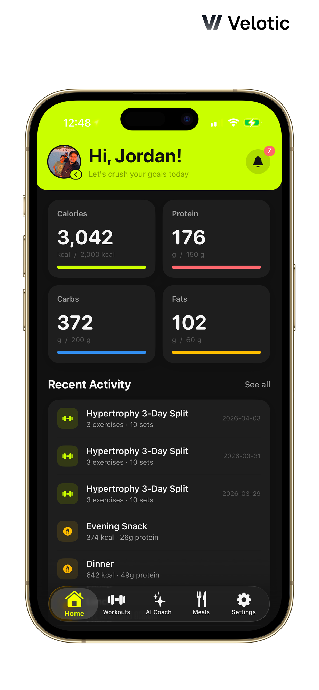
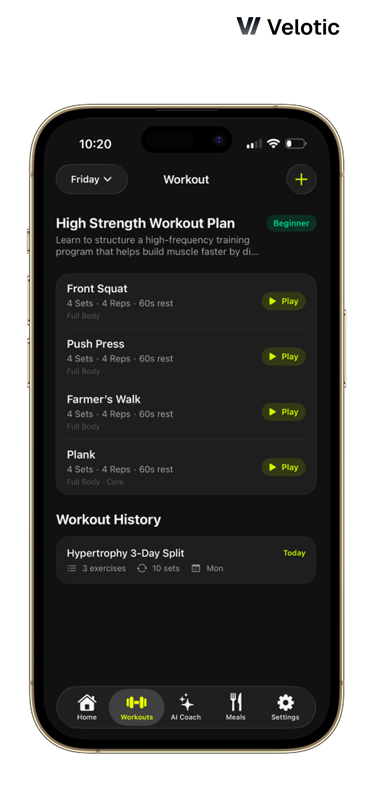
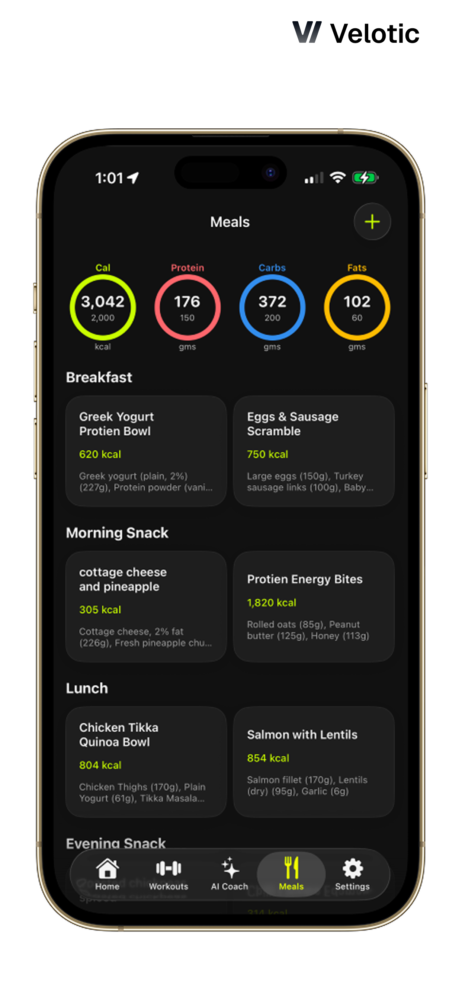
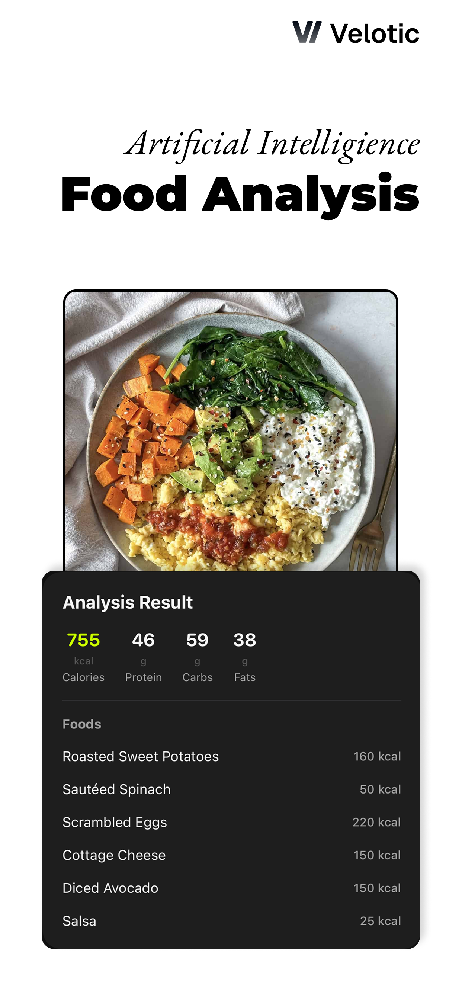

Getting 5 fitness coaches out of spreadsheets, and the 2,150 clients on the other side with them.
Three of my closest friends are fitness coaches. I assumed there was a product for what they did. There wasn't. So I built Velotic, a coach workspace on the web and a client app on iOS and Android, with an AI layer that speaks in the coach's own voice. Solo, twelve weeks, feature complete in May 2026.

How I found the problem nobody was complaining about.
Last year I got curious about what three of my closest friends do for a living. All three are fitness coaches with nine to ten years on the job each. I asked one of them, casually, how he tracked his clients' progress. He pulled out his phone, opened Google Sheets, and showed me a tab system that looked like it had been built by someone who had never been told there was another way.
I had assumed there was a product for this. There wasn't, at least not one any of my friends had adopted. So over the next few weeks I sat down with each of them, one at a time, and asked them to walk me through a normal week.
The friction was so old it had gone invisible.
The most interesting thing about those conversations was that none of them thought they had a problem. They had built their entire business inside Excel and Google Sheets and the friction had become invisible. It took me asking them to narrate a single day, step by step, before the cost surfaced.
Across all three coaches, the same pattern:
- Each managed 20 to 30 clients at a time, in onboarding batches
- They were effectively on call 24/7. None had taken a day off in months
- Daily follow ups happened over WhatsApp and text. Programs, checkins, motivation, all in the same thread
- Every client got four spreadsheets. A diet sheet, a workout sheet, a progress sheet the client was supposed to log into daily, and a body measurements sheet updated weekly
- Fridays and Saturdays were analysis days. The coach would open each client's sheets, look for patterns, and decide what to change
- Sundays were feedback days. Long voice notes, scribbled tweaks, occasional video calls
"When a client messages me at 11 PM, I either answer and don't sleep, or I don't answer and feel guilty about it. There's no middle ground."
Coach 2 of 3, Bangalore
Then I went to the other side of the spreadsheet. I interviewed five of their clients. From the client side, the pain was different and louder. Logging a workout in Excel on a phone was awful. Reading a recipe out of a row of cells with no images was worse. Two of the clients I spoke to had quietly stopped logging months ago and were just lying about it in their weekly checkins.
A coach who can answer at 11 PM without being awake at 11 PM.
Build something that takes the routine question off the coach's plate. Give the client a phone first surface that doesn't feel like a spreadsheet. And let the coach stay the coach, instead of becoming a chatbot.
Three native surfaces, one Firebase spine, three AI providers split by job.
Velotic shipped in twelve weeks. A coach portal on the web, a client app on iOS and Android, and an AI Coach that sounds like the human the client signed up for.
The coach portal
The web portal is where the coach lives. Seventeen pages organized into a daily driver set (Revenue, Pipeline, Clients, Chat, Workout Studio, Diet Planner) and a longer tail set (Forms, Templates, Calendar, Analytics, Team Management, Invoices, Discovery, Pending Clients). Workouts and diets are built once as templates, then assigned. The chat surface is the same in app thread the client sees, with a WhatsApp Business API bridge for clients who won't move off WhatsApp.
The point of the portal isn't more features. It's to collapse four spreadsheets per client into one screen the coach can see at a glance, and to make the Friday analysis session a five minute one.
The client app
Five tabs on the phone: Home, Workouts, Habits, Meals, Settings. SwiftUI on iOS 18 with HealthKit, App Attest, biometric lock, and Dynamic Island toasts. Jetpack Compose on Android with Play Integrity, Health Connect, Hilt, and ExoPlayer for exercise demo videos.
A workout logs sets, reps, and weight, with optional video form checks. A meal can be logged three ways: a photo (Gemini parses it into ingredients and macros), a voice note ("two eggs, toast, black coffee" — Whisper transcribes, Gemini extracts), or text search against an Indian food database. Body measurements roll up into a single weekly card. None of it feels like a spreadsheet.




Fig 1. Client app on iOS. Home dashboard, workout plans, meal tracking, and AI-powered food analysis.
The AI Coach
The bet that the rest of the product had to defend: AI in the base tier, not premium, and trained on the coach's own voice. Every message assembles a fresh system prompt from the coach's bio, certifications, methodology, and an editable directives panel they write themselves. The client's current plan, recent assessments, and last seven days of logs layer on top.


Fig 2. Insight Cards are the AI's user facing surface. One pattern, dozens of stories, all stamped with the coach's own voice.
The honest version.
What worked
- AI in the base tier was the right call. Trainerize gates it behind their top plan. I didn't. All five coaches use it daily, and clients ask it more questions than they ask the human.
- One token, three platforms. The design system uses identical token names across web, iOS, and Android (AccentGreen, BgBase, MacroProtein). Roughly 195k lines of platform code stayed visually coherent because the names did.
- Voice beat photo for meal logging. Not what I expected. Clients walk and talk into the app instead of stopping to compose a photo. Voice logs outpaced photo logs in the first month of beta.
What didn't
- The AI directives panel is too powerful and too unguided. All five coaches needed me to set theirs up by hand. v2 needs a guided builder, not a free form textarea.
- The marketing site is a placeholder. All inbound has been WhatsApp introductions from the original three coaches. That works for a beta of five. It will not scale.
- I over designed the Insight Card system before clients had seen one. The first version would have been good enough. Three weeks lost on a component that, in hindsight, wanted to be simpler.
What's next
- A 40% AI deflection target through July 2026. Routine client questions resolved by AI without escalating to the human coach, measured weekly across the five coach books.
- A guided builder for AI directives, so new coaches can self serve their own voice setup in under ten minutes.
- Wearable integrations. Strava, Garmin, Apple Watch. Deferred from v1, on deck for v2.
- A real marketing site and a paid acquisition test in Tier 1 Indian metros.
Pre revenue. Past the question of whether anyone would use it.
Two of the post launch coaches found me through WhatsApp introductions from the original three. Neither saw a marketing site, a deck, or an ad. They onboarded because someone they trusted told them this thing existed and was free for now. That's an early signal worth more to me than any vanity metric the beta could throw.
Two things from this one that I'll bring to the next.
A token named design system beats a pixel perfect one. AccentGreen meaning the same thing in three codebases is what kept this coherent at solo scale. The token names were more load bearing than any individual screen.
The unit of design wasn't a screen, it was the conversation between surfaces. The most useful diagram I drew the whole twelve weeks wasn't a UI mockup. It was the flow of a single workout from coach planner to Firestore to client app to client log to coach analytics. Once that flow read clean, every screen that touched it got easier to design.